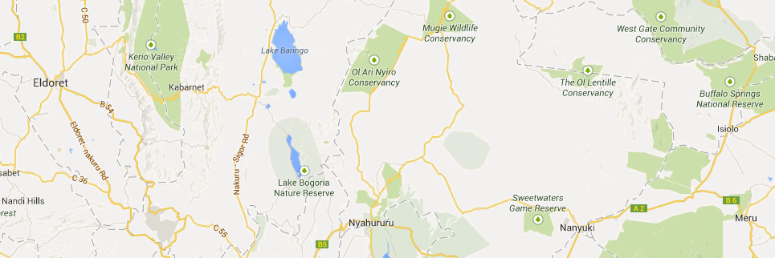

Project Indicators

| Indicator | County | Sub-County | Community | Project | Target | Achieved | % Achieved |
|---|---|---|---|---|---|---|---|
| Number of beneficiaries with increased income earned from the project | Kisumu | Siaya | Sauri | Dairy | 4 | 2 | 75% |
| Number of beneficiaries with improved houses out of proceeds from the project | Kisumu | Siaya | Sauri | Dairy | 4 | 2 | 75% |
| Number of beneficiaries with increased household assets acquired through proceeds from the project | Kisumu | Siaya | Sauri | Dairy | 4 | 2 | 75% |
| Number of children in schools and other learning institutions supported by proceeds from project earnings | Kisumu | Siaya | Sauri | Dairy | 4 | 2 | 75% |
...
...